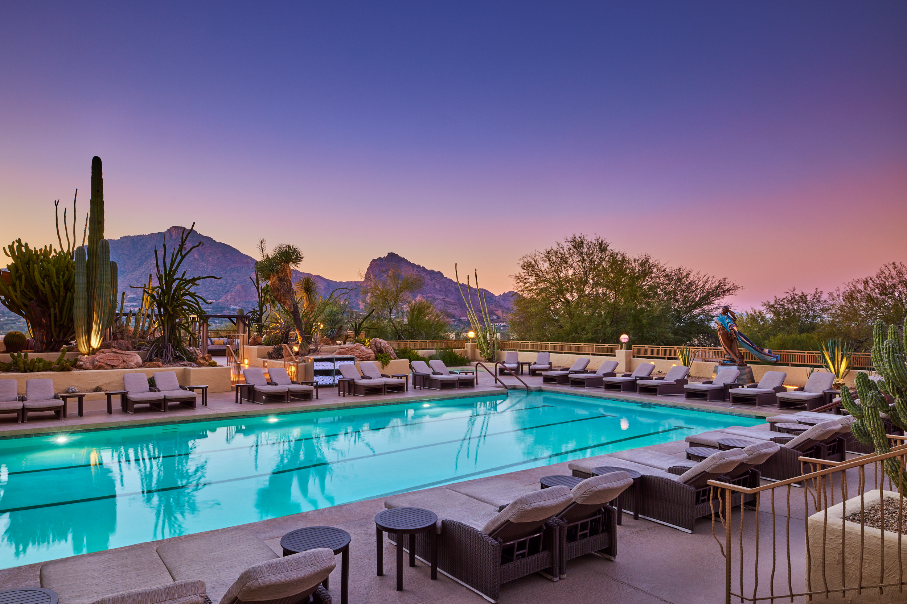

|
About Us
Palm Springs Tropical Resort aims to provide a sanctuary of tranquility and rejuvenation, allowing guests to escape daily stresses and embark on a journey of holistic wellness. We offer exceptional spa experiences that nurture the body, soothe the mind, and uplift the spirit. Our skilled therapists and estheticians, luxurious treatments, and serene ambiance promote relaxation and inner harmony. We believe in the transformative power of self-care and strive to help guests achieve their wellness goals. Our spa embraces diversity, inclusivity, and sustainability, creating a welcoming and environmentally conscious space. We foster a culture of wellness and empowerment, supporting guests on their journey to health, happiness, and self-discovery. We invite you to join us on a voyage of self-discovery and renewal.
|
Mission Statement
Palm Springs Tropical Resort is dedicated to empowering wellness through personalized experiences, nurturing the mind, body, and spirit of each guest. We offer a serene sanctuary with a passion for holistic care, creating an environment of tranquility and rejuvenation. We offer luxurious treatments and services tailored to individual needs, focusing on self-care and helping guests achieve their wellness goals. We prioritize sustainability, minimizing our ecological footprint while maximizing the well-being of our guests and community. We embrace diversity, inclusivity, and kindness, fostering an atmosphere of acceptance and respect. Our mission is to inspire wellness, ignite inner harmony, and leave guests refreshed and empowered to embrace life's journey. |
 |